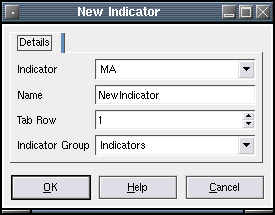

New Indicator
Description:
Create a new indicator for display and further configuration.
Selecting New Indicator will bring up a dialog that asks you to choose from the list of installed indicator plugins. Only indicators that have been installed as plugins will be available. This includes the extensive list of indicators available via the TA-LIB library.
There are two ways to use indicators:
- Select it from the list. This provides access to its parameters.
- Select "CUS" from the list to use it via the CUS custom indicator. This also enables combination of different plots in one indicator. See examples.
Usage:
The "Name" field requires a unique name for the new indicator. The "Tab Row" sets the row number where you want the indicator to be placed. The maximum number of rows is 3.
The Indicator Group field has two types. The user can apply the new indicator to the current indicator group or may create a 'Local' indicator. A local indicator applies only to the currently loaded chart. This is useful if the user wants to apply specific indicators to specific charts rather than applying global indicators.
After completing the above dialog, the edit indicator dialog will be
displayed. All
of the parameters that apply to the indicator can be edited here.
This will create a text file at ~/.qtstalker/dataN/indicator/Indicators/ which can be further edited, either via the interface or by hand. For manual changes, reload the chart to see the effect. New indicators created manually require progam re-start.